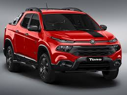
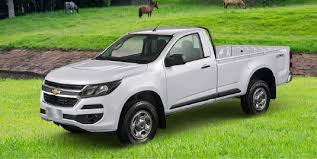

- Sobre a Carros
- Conforto de Carros
- Marcas de Carros 
- Fiat 1.Fiat No ranking da Federação Nacional de Distribuição de Veículos Automotores (Fenabrave), dos 50 carros mais vendidos em 2018, a montadora italiana aparece com 7 modelos. Vários dos seus carros são conhecidos pela economia de combustível — mas o conforto também recebe destaque em alguns veículos. O Fiat Argo, por exemplo, conta com central multimídia, botão para ligar e desligar o motor, câmbio tipo borboleta e ar-condicionado digital. Um recurso excelente nesse modelo é a função Tilt Down, que inclina automaticamente o retrovisor quando a marcha ré é acionada — uma ajuda e tanto para estacionar. O Argo se saiu bem nos testes de ruído e apresenta conforto acústico acima da média. Já o Fiat Toro é o sonho de consumo de muitos brasileiros. Ele conta com a função Hill Holder (sistema ativo de freio que ajuda nas arrancadas do veículo em subida), piloto automático, banco do passageiro rebatível, apoia-braço central entre os bancos dianteiros e, nos traseiros.
- Ford 2.Ford A empresa sempre foi bem conhecida pelo conforto e pela segurança dos seus automóveis. Entre os carros mais vendidos da marca estão o Ford Ka e o EcoSport. O Ka disponibiliza bancos de couro em algumas versões e conta com vários porta-objetos espalhados pelo interior. O SYNC Media System é um sistema multimídia com uma tela de 3,5 polegadas, conexão Bluetooth, comandos de voz e botões no volante. Já o EcoSport conta com uma tela multimídia de 8 polegadas sensível ao toque, uma outra tela de 4,2 polegadas exibindo o computador de bordo, um incrível sistema de som com 9 alto-falantes posicionados estrategicamente e câmbio automático. Na versão Titanium ainda é possível desfrutar do teto solar elétrico. Se você está querendo um carro novo, o EcoSport certamente é uma boa opção.
- Chevrolet  3. Chevrolet Entre as melhores marcas de carro não podia faltar a tradicional companhia norte-americana. Ela tem feito grandes investimentos relacionados à conectividade e à eficiência energética. A capacidade de inovação da montadora é incrível, com o contínuo desenvolvimento de novos modelos. Uma revolução da Chevrolet foi a tecnologia exclusiva OnStar. Com um toque em um botão no retrovisor interno, no aplicativo ou em um dispositivo conectado à internet, é possível consultar informações como: - serviços de segurança; - diagnóstico; - abertura e fechamento de portas. O Chevrolet Cruze conta com as versões hatch e sedan. Ambos são procurados pelo desempenho e conforto oferecidos. Um sistema fantástico que equipa esses veículos é o Easy Park. Por meio dele, é possível estacionar em vagas horizontais e perpendiculares sem usar as mãos. Tudo automaticamente! Incrível, não acha?
- Jeep 4.Jeep Os carros ícones do off-road se tornaram sinônimo de uma categoria. Com foco em inovação e tecnologia, e ainda conseguindo se apegar ao estilo tradicional, a Jeep surpreendeu o mercado brasileiro nos últimos anos. Um dos carros mais vendidos é o Compass. Essa máquina esbanja conforto com o teto solar panorâmico, o ar-condicionado Dual Zone, que permite duas temperaturas no interior, e o dispositivo multimídia Uconnect, que integra seu smartphone à central do carro. Com o comando de voz, você pode fazer ligações, mandar mensagens, escolher músicas e ainda alterar a temperatura interna.
- Toyota
- Honda 6.Honda No Brasil há mais de 20 anos, a Honda não se tornou referência em conforto e segurança à toa. Entre os muitos modelos produzidos pela empresa originária do Japão, alguns se destacam exatamente por combinarem praticidade e comodidade. O HR-V, por exemplo, é sinônimo de espaço e dirigibilidade. Esses atributos fazem dele um dos melhores automóveis para viajar, principalmente para quem tem filhos. Entre as suas opções de acessórios, vale destacar a direção elétrica, a transmissão automática e o piloto automático. O porta-malas também chama atenção. O FIT é outro modelo a ser considerado. Na versão EXL do modelo, é possível contar com 6 airbags, ar-condicionado digital, conjunto óptico full LED e painel de multimídia com 7 polegadas e interface para smartphone.
- Mitsubishi Motors 7. Mitsubishi Motors Essa é outra marca japonesa já consolidada no mercado brasileiro. Embora alguns dos seus modelos não sejam tão populares ou acessíveis no Brasil, um deles já conquistou uma parcela significativa de consumidores: o Pajero.
carro é um veículo motorizado com rodas usado para transporte. A maioria das definições de carro diz que eles correm basicamente em estradas, acomodam de uma a oito pessoas, têm quatro pneus e, principalmente, transportam pessoas em vez de mercadorias.
Os carros mais confortáveis não necessariamente são os espaçosos. Porém, não há como negar que o espaço interno de um veículo contribui para o conforto do motorista e dos passageiros.
 5.Toyota
A companhia japonesa é famosa pelo design atraente dos carros, pela confiabilidade e pela vida útil dos modelos.
Um dos automóveis mais requisitados é o Corolla. Ele apresenta um motor 2.0 e é equipado com um câmbio CVT de 7
velocidades. Somado a isso, é possível conduzir o carro de maneira mais esportiva e emocionante com o simples
apertar do botão Sport.
O Toyota Prius é um modelo híbrido que se sobressai pela economia. Além disso, o seu interior futurista realça
a beleza externa. Também tem câmbio CVT com alavanca tipo joystick, assentos dianteiros com sistema elétrico de aquecimento,ar-condicionado Dual Zone, carregador sem fio para smartphone e por aí segue a lista. É um carro inovador!
5.Toyota
A companhia japonesa é famosa pelo design atraente dos carros, pela confiabilidade e pela vida útil dos modelos.
Um dos automóveis mais requisitados é o Corolla. Ele apresenta um motor 2.0 e é equipado com um câmbio CVT de 7
velocidades. Somado a isso, é possível conduzir o carro de maneira mais esportiva e emocionante com o simples
apertar do botão Sport.
O Toyota Prius é um modelo híbrido que se sobressai pela economia. Além disso, o seu interior futurista realça
a beleza externa. Também tem câmbio CVT com alavanca tipo joystick, assentos dianteiros com sistema elétrico de aquecimento,ar-condicionado Dual Zone, carregador sem fio para smartphone e por aí segue a lista. É um carro inovador!
NOSSA HISTÓRIA
O primeiro veículo motorizado a ser produzido com propósito comercial foi um carro com apenas três rodas. Este foi produzido, em 1885, pelo engenheiro alemão Karl Benz e possuía um motor a gasolina .
A história do automóvel tem início por volta de 1769, com a criação do motor a vapor de automóveis capazes de transportar humanos.[1]:14 Em 1807, os primeiros carros movidos por um motor de combustão interna a gás combustível apareceram, o que levou à introdução em 1885 do moderno motor a gasolina ou com combustão a gasolina onipresente interno.[2] O ano de 1886 é considerado o ano de nascimento do automóvel moderno - com o Benz Patent-Motorwagen, pelo inventor alemão Karl Benz.[3] Carros movidos a energia elétrica apareceram no século XX, mas praticamente desapareceram de uso até o século XXI. O início da história do automóvel pode ser dividido em um certo número de eras, com base nos meios comuns de propulsão. Períodos posteriores foram definidos por tendências de estilo exterior, tamanho e preferências de serviços públicos.